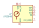
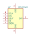
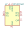
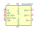
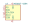
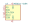

| Symbol |
Description |
40PC015G | Description: Gauge pressure sensor, 0 to 15PSI, 5V supply, 0.2% accuracy, integrated signal conditioning, excellent media compatibility
Keys: gage gauge pressure sensor
Datasheet: http://www.honeywellscportal.com//index.php?ci_id=138832 |
40PC100G | Description: Gauge pressure sensor, 0 to 100PSI, 5V supply, 0.2% accuracy, integrated signal conditioning, excellent media compatibility
Keys: gage gauge pressure sensor
Datasheet: http://www.honeywellscportal.com//index.php?ci_id=138832 |
40PC150G | Description: Gauge pressure sensor, 0 to 150PSI, 5V supply, 0.2% accuracy, integrated signal conditioning, excellent media compatibility
Keys: gage gauge pressure sensor
Datasheet: http://www.honeywellscportal.com//index.php?ci_id=138832 |
40PC250G | Description: Gauge pressure sensor, 0 to 250PSI, 5V supply, 0.2% accuracy, integrated signal conditioning, excellent media compatibility
Keys: gage gauge pressure sensor
Datasheet: http://www.honeywellscportal.com//index.php?ci_id=138832 |
BMP280 | Description: Absolute Barometric Pressure Sensor, LGA-8
Keys: I2C, SPI, pressure, temperature, sensor
Datasheet: https://ae-bst.resource.bosch.com/media/_tech/media/datasheets/BST-BMP280-DS001.pdf |

LPS25HB | Description: MEMS pressure sensor, 260-1260 hPa, absolute digital output baromeeter
Keys: mems absolute baromeeter
Datasheet: www.st.com/resource/en/datasheet/lps25hb.pdf |

MPL115A1 | Description: SPI Digital Barometer
Keys: spi barometer thermometer mems
Datasheet: http://www.nxp.com/assets/documents/data/en/data-sheets/MPL115A1.pdf |

MPL3115A2 | Description: I2C precision pressure sensor with altimetry, LGA-8
Keys: pressure sensor altimetry
Datasheet: https://www.nxp.com/docs/en/data-sheet/MPL3115A2.pdf |
MPXA6115A | Description: Absolute pressure sensor, 15 to 115kPa, analog output, integrated signal conditioning, temperature compensated, SO package
Keys: absolute pressure sensor
Datasheet: http://www.nxp.com/files/sensors/doc/data_sheet/MPXA6115A.pdf |
MPXAZ6115A | Description: Absolute pressure sensor, 15 to 115kPa, analog output, integrated signal conditioning, temperature compensated, media resistant gel, SO package
Keys: absolute pressure sensor
Datasheet: http://www.nxp.com/files/sensors/doc/data_sheet/MPXA6115A.pdf |
MPXH6115A | Description: Absolute pressure sensor, 15 to 115kPa, analog output, integrated signal conditioning, temperature compensated, SSO package
Keys: absolute pressure sensor
Datasheet: http://www.nxp.com/files/sensors/doc/data_sheet/MPXA6115A.pdf |
MPXHZ6115A | Description: Absolute pressure sensor, 15 to 115kPa, analog output, integrated signal conditioning, temperature compensated, media resistant gel, SSO package
Keys: absolute pressure sensor
Datasheet: http://www.nxp.com/files/sensors/doc/data_sheet/MPXA6115A.pdf |

MS5525DSO | Description: Integrated Digital Pressure Sensor
Keys: 24bit low-power I2C SPI
Datasheet: https://www.te.com/commerce/DocumentDelivery/DDEController?Action=srchrtrv&DocNm=MS5525DSO&DocType=DS&DocLang=English |

MS5607-02BA | Description: Barometric pressure sensor, 20cm resolution, 10 to 1200 mbar, I2C and SPI interface up to 20MHz, LGA-8
Keys: pressure SPI I2C
Datasheet: https://www.te.com/commerce/DocumentDelivery/DDEController?Action=showdoc&DocId=Data+Sheet%7FMS5607-02BA03%7FB2%7Fpdf%7FEnglish%7FENG_DS_MS5607-02BA03_B2.pdf%7FCAT-BLPS0035 |

MS5611-01BA | Description: Barometric pressure sensor, 10cm resolution, 10 to 1200 mbar, I2C and SPI interface up to 20MHz, LGA-8
Keys: pressure SPI I2C
Datasheet: https://www.te.com/commerce/DocumentDelivery/DDEController?Action=srchrtrv&DocNm=MS5611-01BA03&DocType=Data+Sheet&DocLang=English |